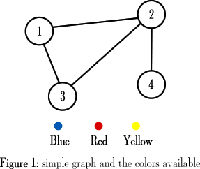
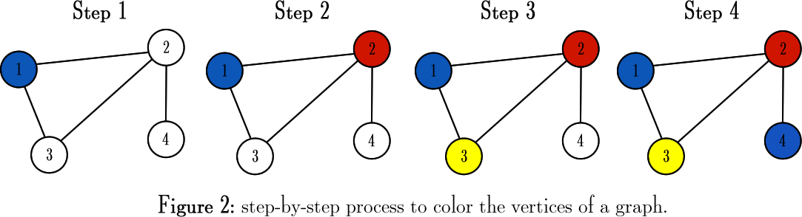

It is known that the problem of coloring a graph with the smallest number of colors needed (finding its chromatic number), is part of the set of NP-Complete problems.
However, there are methods that can be used to color vertices sequentially, by choosing the colors based on the colors already assigned in the vertex’s neighborhood. In other words, we can use what is called a greedy algorithm to solve the problem.
To explore this approach, imagine that you have a palette with 3 colors available, and the following graph to color:

Knowing that you cannot color vertices that are adjacent to each other with the same color, the step-by-step process to color the entire graph of Figure 1 is described below:

One of the applications that I like the most and where graph coloring can be applied is the frequency assignment in cellular networks. In order to avoid interference (or crosstalk), different frequencies are assigned to adjacent cells, and the total number of distinct frequencies should be minimized.
Therefore, if you instead of considering the colors blue, red and yellow, consider them as frequency 1, frenquency 2 and frequency 3, the algorithm that we manually applied to the graph above could have been very useful to configure a simple cellular network or any similar schema described as a graph.
In the next part we’ll be going through a C++ implementation that generates code that can be compiled in LaTeX using Tikz, where we’ll be able to see it working for generic graphs.